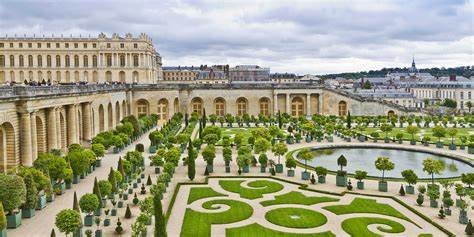
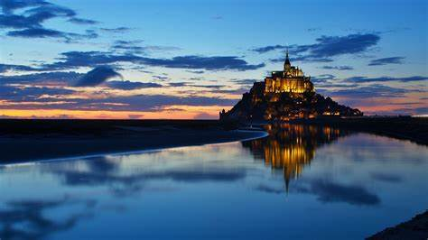

FRANCE
France boasts some of the most vibrant cities, picturesque villages, and famous wine regions in the world. U.S. News developed this ranking of the best places to visit in France by considering factors such as the variety of attractions, accommodations, climate, and culinary experiences. Whether you're looking for an exciting sightseeing trip or a tranquil wine getaway, you'll discover a delightful French vacation here. Help shape next year's ranking by voting for your favorite destinations in France below.
Eiffel Tower

The Eiffel Tower stands as a marvel of engineering as well as a world-renowned landmark. Comprising 8,000 metallic parts, it was designed by Gustave Eiffel as a temporary installation for the 1889 World Fair. Though initially criticized, the 330-meter-high tower has become a cherished and iconic feature of the Paris skyline.
At first sight, the tower’s graceful lightness is striking despite its massive scale, and the stunning views from each of its three levels are truly breathtaking.
Château de Versailles
The UNESCO-listed Château de Versailles transports you into the grandeur of France's royal past. It offers a glimpse into the age of the ancien régime, when Louis XIV, the "Sun King," along with Louis XV and Louis XVI, ruled France. In this era, the Palace of Versailles became the model for aristocratic courts across Europe.
The palace’s most stunning area is the Hall of Mirrors, where courtiers would gather to seek an audience with the king. This radiant gallery glows with sunlight streaming through the windows, reflecting off hundreds of ornate mirrors, while glittering chandeliers and gilded accents enhance the space's opulent charm.
Mont Saint-Michel
Dramatically perched on a rocky islet off the coast of Normandy, the UNESCO-listed Mont Saint-Michel is among France's most iconic landmarks. Known as the "Pyramid of the Seas," it rises 80 meters above the bay, encircled by imposing walls and fortifications.
The main attraction, theAbbaye du Mont Saint-Michel, is a masterpiece of medieval architecture with its towering Gothic spires. Visitors are captivated by the Abbey Church’s tranquil beauty, featuring a graceful Romanesque nave and a richly decorated high-vaulted choir.